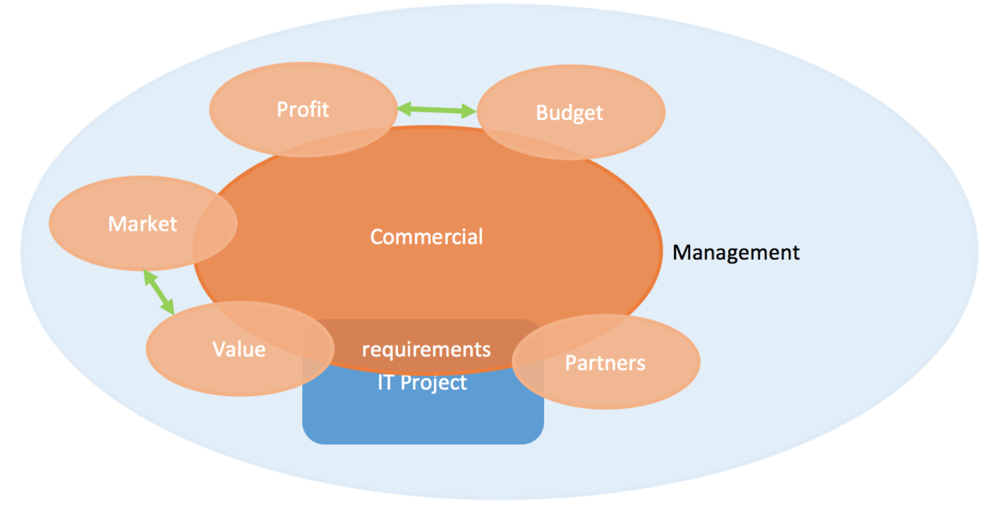
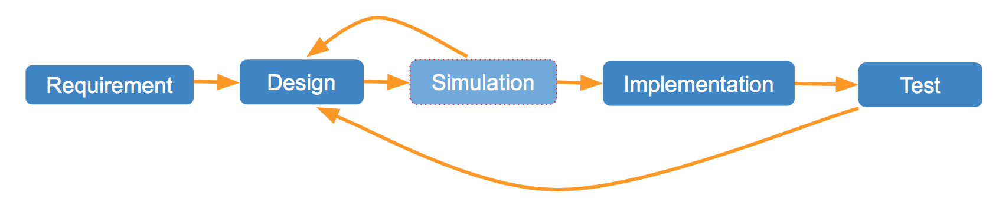
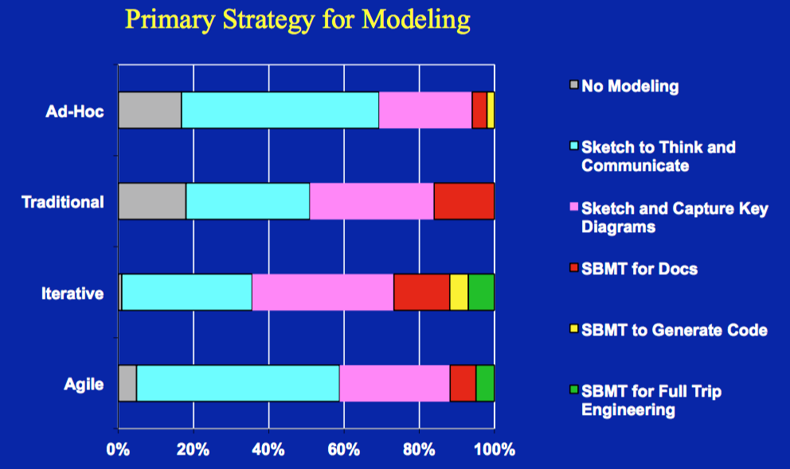
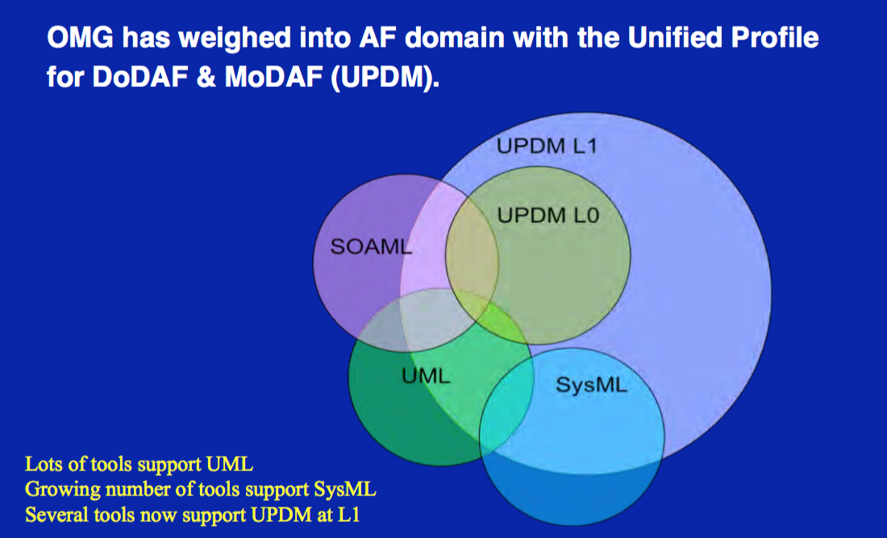
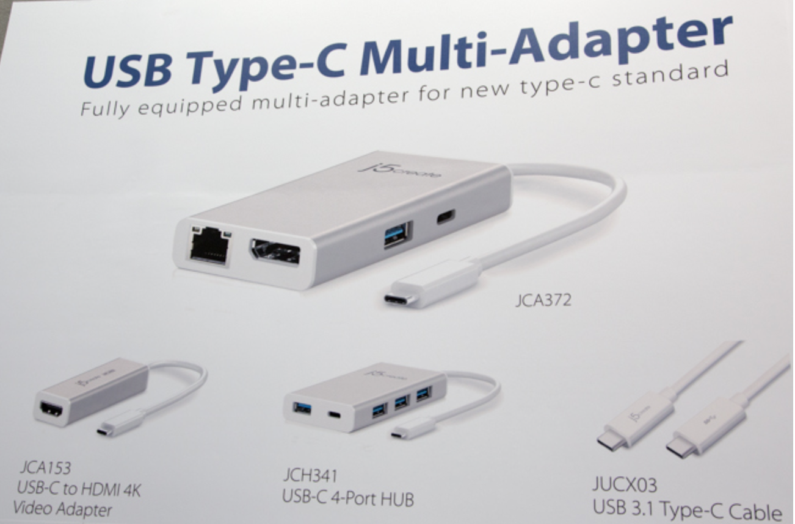
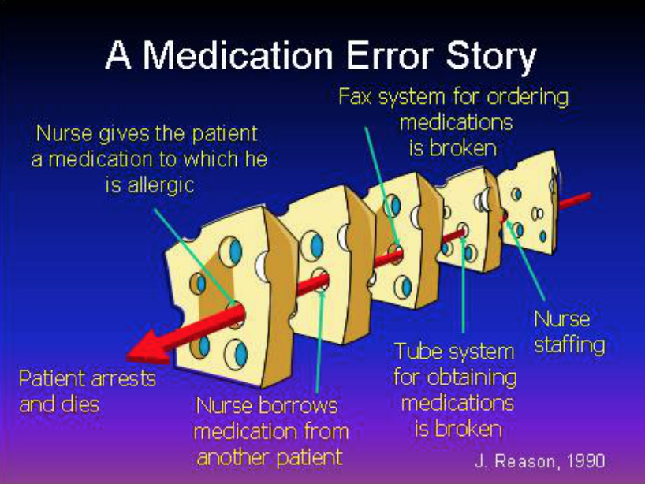
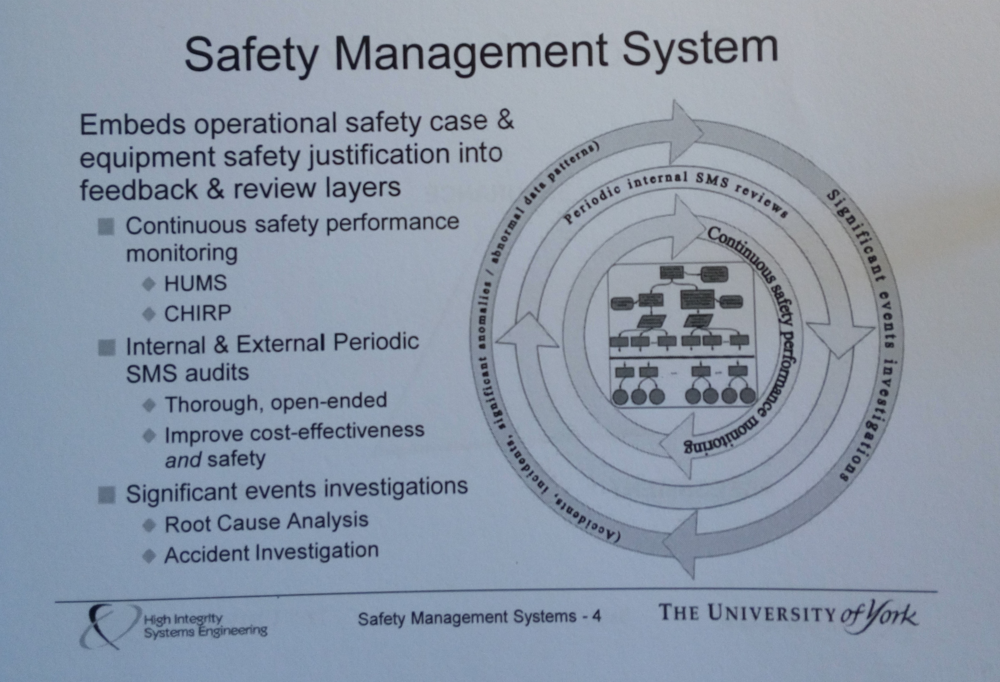
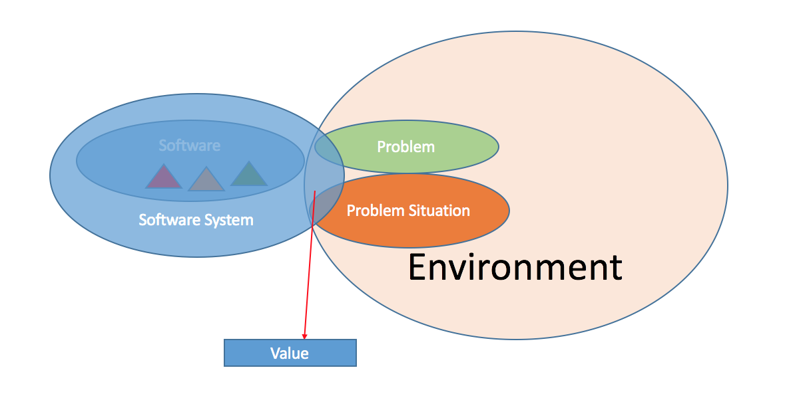

Wang Fei
I am interested in large-scale data process and artificial intelligent. After working in ZTESoft for three years, I go to ANU for further study. I will graduate at May 2016.
I am interested in large-scale data process and artificial intelligent. After working in ZTESoft for three years, I go to ANU for further study. I will graduate at May 2016.
“
”Commercial contextial thinking from engineering to commercial.
As IT engineers, we would like to work in engineering way. However, this is only one part of the whole commercialize project. From following chart we can learn that a commercial project includes: product management, partners, market, requirements, budget, profit, etc. All of these factors effect each others and finely contribute to project success or failure. Besides these factors, political, economic, sociological, technological, legal, environmental also should be considered when run commercial project.

In software development domain, it follows the process of requirement, designing, coding and testing. Some model based project also using model simulation to demonstrate designing correct. Issues found in testing will feedback to design to improve the designing. Also, we should remember that the requirements come from customers, and the requirements will change as their business going. So, suitable lifecycle chosen plays critical role in software development. If you are facing dynamic requirements circumstance, an agile lifecycle may suitable for your project. On another way, a water fall lifecycle may suitable for quick startup project.

Step out engineer scoop, the requirements are the first commercial context we are facing. Requirements comes from customers may chaos, redundant or too many to complete. The product manager should take the responsibility to define the product volumes because of the constrains. Constrains include monetary limitations, time limitations, human resource limitations and physical limitations, etc. Project boundary defining is a key step to ensure your project success. Cost and profit are another two factors that commercial project should considered. For any project, there at lease three partners: investors who provide resource to run the project, product running organization who develop valuable things to customers, customers who pay money to enjoy the value provided by the product. The investors fund the product because they believe the project profitable. Product running organization development the product because they believe that customers require such a product, it will serve customers and they can earn money from the market. Customers use the product because they really need it and it provides value for customers. Customers always want perfect product with functions they required. More functions and perfect software means more investment, and more risks on software development. Product manager should consider the balance between investment and its produce, functions and project risks.
As we know, comparing with projects in other field such as construction, IT projects fail in higher rate. The main reason is requirements modification from customers. The modification causes re-designing and re-implementation, extends the project duration and greatly increase project cost. Project fails when the cost exceeds budget. Sometime, time is also a budget, project duration extension running out planed date also means project failure.
There are two way to solve this issue: 1. product management. 2. Using model driven software development.
Firstly, project manager should adopt the requirements management to his/her management scope. Different with market people collecting and managing the requirements, project manager should extends his/her work to market partly, and specifically provide feedback to customers how their modification to requirement will impact current project schedule and cost.
Secondly, the feature that modification on model will immediately affect code makes model driven software development very suitable for resource limited dynamic requirements project. This kinds of project can benefit a lot even if applying model driven system development to parts of the IT system.
“
”Advanrages of Model driven software development and reasons why it is not widely used.
Currently, the software development process is following the steps of Requirements surveying, Software Designing(Modelling may included in the step), Coding and Delivery product. In most cases, the delivered project will run at maintenance status to provide service to public customers or specific organizations. When there are new requirements coming from customers, people have to step through the development process again and again. To shorter the software development duration and simplify the software development complexity, model driven software development was promoted. It uses model to represent requirements and display architecture or design. A model compiler translates the model to source code. Any issues discovered on test stage will directly feedback to original model. Modifications on the well organized and displayed model are as simple as drawing UML on UML tools. The modification will be compiled to source code as soon as finishing the model edition. Until recent years, the model driven software development have evolved. Taking SysML for example, it supports more features such as model analyzing to ensure model correct, model based testing to make code generation transparent for terminate users, and requirements tracing to allow customer involved in the model design.
 (https://wattlecourses.anu.edu.au/pluginfile.php /1105716/mod_resource/content/1/COMP3530-MBSE-2016.pdf)
Model driven software development has so many good and useful features. However, very few of projects use it in practice. From figure “Primary Strategy for Modeling” we can find that projects in 40% just use model as tool to communicate or sketch thinking, another 40% project use model to sketch and capture key diagrams, and only less than 5% iterative projects really use model to generate code. It is reasonable that model is more commonly used in iterative lifecycle projects. But there is a question for agile, why agile software develop method do not use model driven? From this figure we also find that model driven software development only take very narrow range of the chart. Why?
I believe that this is related with commercial factors: investment and revenue. As we know, human are the key participators, and human resource is the most expensive resource in software development. Since a few software engineers familiar with model driven software development, accepting this technic means large volume investment on human hours (their effort to do valuable work and their salary) and money (training, model complier, etc. ). Comparing with model based software development, traditional code based projects can speed up their speed by hiring more software engineers, who are well trained at school. Also, globalization is another impact to model driven and it does good to traditional software development. Company can hire intelligent software engineers from China and Indian in lower price than Europe, America and Australia.
 (https://wattlecourses.anu.edu.au/pluginfile.php /1105716/mod_resource/content/1/COMP3530-MBSE-2016.pdf)
Another issue of model driven software development is standard. It is true that there are a lot of tools and their applying saturations. The number of model tools means no unit defined standard. The following figure shows the chaos of model standards and their relationship. The chaos standards confuse people and stop them to study with interesting. If there is a well defined standard for model driven software development as simple as UML, software engineers and students would like to study it and apply it in their projects. At that time, the investment of applying model driven software development in commercial projects will decrease.
“
”Standards is governing our world on every part from life, work to leisure.
Product standards Looking through your home, almost every product is mad under specific standard. For example, electrical adapters, size of beds, size of clothes, desktop, laptop, cell phone, etc. Life with kinds of product standards is much easier than without them. Considering travelling to foreign countries, one thing you have to do before setting out is to check what kinds of electrical adapter is required for the country of destination. The product standards make everything pluggable for its relations. Such as all CD have 80 minutes long which allows all CD player can play the standard CD.
Process standards In IT work, the process standards are critical. For example, without the Internet protocol stack, the world can’t fully connected, people can not enjoy the online multi-media, and a lot of new technology can not developed such as cloud computing, Internet of Things, and Intelligence City, etc. The process standard defines how things are composed.
System Standards I worked as internship in a factory years ago. The experience told me how important the Safe management system is in a factory. As we know, there are kinds of machines and producing materials in a manufacture factory. The running machines and toxic materials are danger to workers. The standard of how to manage these things make the safety learnable for factory workers. Such as 4S standard which defines how to organize things through out a factory. Taking running machine for example, the standard defines how far away to the machine by bright yellow line on the ground.
Well, when we look through a stands, it seams quite simple. However, the standard define may spend around ten years from idea, draft, to publish. Because the final released standard should be highest quality. Take USB Type-C connecter for example, it is finalized in August 2014 and currently used on MacBook, Chromebook Pixel, and ASUS Transformer book. It can be used as both electrical cable and USB connector. However, considering the usage of laptop that most of time the electrical cable should be connected, users have to remove the electrical cable first to make USB storage device connection available. It may make the device looks more beautiful, but add troubles for usage. Also, the standard is quite new, and many old devices may not adapter to this standard. So devices, such as in the bellowing picture, are invented. Quite strange phenomenon.
 (https://contentparty.org/r/12990eb7c36c5310facac100fb2852ce) (https://i.imgur.com/vRf6Rg6.jpg )
Currently, our team are developing the web client application for online booking system. Because of HTML standard implementation differential between explorers such as Safari, Chrome, FireFox and IE etc., we have to use third party HTML and CSS tool such as Bootstrap developed by Tweeter to solve this issue. It may because of commercial, market or company strategy, the products which unfollow/break the HTML standard have greatly effect IT industry and have cost huge money and IT engineers’ effort to solve the gape. Good news is that the standard breakers are being driven away.
Also, model driven software development is also facing standardization issues. An unit defined standard on model driven software development could highly promote the broad usage of this software development method.
“
”Human error is inevitable but it can be predicted by analyzing and reduced in severial ways.
Human error is inevitable. Engineers should keep this words in mind when they design system. Taking lecture case for example, engineers had done a lot on the security of airplane such as: two pilots flying, separate flying room to passengers’ room, flying room door can only opened inside, complex warning system when airplane unstable. However, when the situation of one pilot leave flying room, the flying room door closed, and the pilot (who is sick) depression showing effect, the airplane is in danger. Just as the following picture shows that though engineers set a lot of dampers besides cause and accident, the event also may happen when it goes through the dampers’ bug hole.
 (https://prezi.com/ucgpdzt0g7bz/human-error-in-complex-systems-2016/)
However, human error can be predicted by analyzing and reduced by setting fences around dangerous operations. For example, from accident engineer can identify hazards which involved in the event, use fault tree to analysis the minimal hazard sets which may cause the event, and then make standard safe checking list to identify potential risks. Since human is the last fence to ensure the safe, training, work regulation and processing standardization are extremely important to prevent human error cased accident.
Different with human imagination, the connection between accident and its causes is not linear. It make the defense to human error caused accident more difficult. For large and complex system, a safety management system could be adopted to improve system safety. As we know, most accidents are caused by a series of human errors and they may happen after a long period. The human errors must interactive with the system to change the status of the system, and finally cause the accident. So, the Safety Management System: 1. continuous monitoring the safety performance, 2. periodic review internal Safety Management System, and 3. accident investigation and cause analysis.
 (Introduction to System Safety Engineering and Management, Session 22 Safety Management Systems, 4-8 April 2016, The University of York)
“
”The first part of System Engineer Learning Portfolio is about the basic concepts and their connection. The second part is individual learning and thinking for the lectures.
 Figure 1
The value of Software system is to solve problems. Any software have its own purpose, apply domain and interaction with people. For example, the main purpose of courses management system is to manage students, courses and the student’s enrollment of kinds of courses. Eclipse software allows software engineer writing code easier without buying an IDE. Observing these software, we can find that there are several features shared by all of them. Firstly, they upgrade themselves to improve user experience after collection users’ feedback. Secondly, they fix a lot of bugs all the time when they upgrade. Thirdly, they provide several new features or functions in new version. Why the designers do these things in upgrade? Why not solve all of these issues at a time and release the software. To answer these questions, there are three key facts we should understand firstly. At beginning, the designer have to process kinds of chaotic requirements. The learning path looks like figure 2. After that, the designer has to decide the priority of functions. The higher priority functions will be developed firstly, the lower will be provided to customer later. More than that, customer will desire some new requirements during their usage to improve their work quality. In this way, the software development is a live process. To continually improving the software, engineers have to follow the lifecycle to make their software system more functional and reliable. What more, the value of software comes from the interactive between customer and software. The more users of a software, the more requirements comes from users. More requirements mean that the more matural of a software. Figure 2
The real world is dominated by problem situation. People are good at solve problems, and people setup kinds of subjects to analysis, experiment, and learn the problem from simple to complexity, and we had developed the a lot of methods to solve them. For example, we solved water supply problems using tap water system in city and benefit every citizens, we solved the transport problem using trains, cars and motorway system. We can solve quite complexity problem such as making aircraft, submarine, and rocket etc. However, we can not solve the problems such as traffic jam, air pollution, homeless and wars. Most of the problems in our society are these problem situation. Taking software engineering for example, we can built powerful computer system, we can design kinds of software to solve real problems, and we can improve people’s live using technic. But we can not fully solve the problem situation. And what we are doing now is to solve part of the problem situation, analysis its affection, and then solve another part of the problem situation after getting feedback of interaction.
Dynamic complexity is the key issue for software system designing. As we have learned from the lectures, Technic people are good at decompose analyzing, however, the general analyzing tools have been proved not suitable for dynamic complexity problems. In this situation, the design thinking was developed and proved to be a powerful way to solve the dynamic complexity problems. The software system engineering adopted this new tool and developed agile software management. The agile software development is an interaction iterator processing. For example, facing the hug and complexity problems/problem situation, software engineers firstly solve small part of the problems/problem situation, track the interactions between the solution and its applying environment, analysis the new problems caused by the solution, and then solve more port of the problems/problem situation plus the new problems.
What IT technic has done on information revolution changes the way of communication, the way of resource management and the way of computation. IT always do good things to make the world a good place without any emissions. However, with the development of IT, there are more and more computers and equipment running now a days, and IT becomes a engine consuming industry. Also, the obsolete equipment decomposing method now a days causes another pollution to environment.
Cloud computing is a way to solve this issue. It can reduce pollution in several ways.
First, it maximizes the computing powder of servers to reduce the engine consuming cost by idle servers in datacenter all over the world. Secondly, cloud computing datacenters are mostly located near hydroelectric power station, wind powder station or cooler place where can cool down the servers using cold air or cold water there. Thirdly, cloud computing datacenters use thousands of commodity computers to provide powerful virtual server. The improvement of computing power can be done by adding more computers without discurding the old ones. Also, the recycle of these server can be done by the company who run the cloud computing to reduce the E-waste.
In my perspective, IT system design includes human-centred design and software design.
Human-centred design focuses on the interactive interface with human. In fact, when I and my team design a online food booking and delivery system, what our tutor concern is UI, and it should be as simple as possible for terminal users’ usage. To approach the design strategy, we cancel the register/login step to allow users directly booking dishes whenever they feel hungry. The process of getting feed is also as simple as choosing a restaurant, choosing dishes, selecting desirable delivery time. What customer doing after “choosing” is waiting the dishes coming to their dinning-table. They can track their dishes using the booking application.
As you know, human have the limitation on processing plenty of words and pictures. A user friendly application should be less on words and simple on operations.
As an extension of the lecture, I believe that software API design is another important aspect in design thinking. Now a days, people built software system using a lot of third party libraries to save time and reduce IT risks. The factors of extendable, pluggable and easy to use greatly impact the way of how software engineers involve the libraries and apply them to their application. They are the design thinking strategy on API.
Every system have bugs exposed to hackers and make the system vulnerable. Hacking through these loopholes allows hacker accessing, controlling and even damaging the system. Through security company do a lot on the defense of attacking, the ways of attacking are growing much faster than what security people done. Why? The drive of profit comes from the black chain. Learning from the data showing during the lecture, personal information and zombie BotNet are very valuable. AD injection by hacking website can also earn a lot of money for the hackers. On other hand, the hackers’ activities are not tractable. And Government does little for cyber crime.
On other hand, improvement of security on a IT system will increase the complexity of human usage. To smooth the usage experience, some company even lower the security level and put their users’ personal information in danger. Fortunately, a lot of IT company are trying to find new and more ways of security authorizing and abandoning the way of using username and password. Also, technics, such as https and ssh, are adopted by more and more IT company to secure the transaction between server and client.
“
”Personal State. Cover Latter. My Github .
I am Fei Wang, a second year master student majoring in Computing in Australia National University (ANU). I have found the Informatics Software Engineer job opportunity from CSIRO website.
Prior to studying in ANU, I had worked at ZTE soft on a large scale information manage system called Business Operate and Service Support (BOSS) for almost 3 years, which provides services such as online prepaid/postpaid billing, balance recharging, service opening/closing, accounting, international/domestic settlement, services provisioning etc. When I was working on the projects in Vietnam and Myanmar, my major responsibility was deploying, testing, optimizing and maintaining the BOSS system running on more than 10 IBM AIX UNIX and SUSE Linux servers.) The work was challenging because of the large scale of subscribers, high concurrences, large scale of data and tight-timeframe. However, I always achieved the targets because of the characters of carefulness, patience, calmness, credibility and experience of real-time business operation. I believe these characteristics can also be helpful for the job I am applying for. I also leaded a deploy team to work on the Bangladesh Internal Exchange and International Gateway billing project. Our team successfully complete this project and got the provisional acceptance certificate (PAC) from customers two months ahead the deadline, which benefit our company a lot.

Base on these experience, I am confident that several features promising me be capable for the job. Firstly, I master a lot of IT technics and acquire knowledge of Linux/Unix management, Oracle/MySQL maintain, IT system implementation, IT system management, high availability management, http server management, web service frameworks, and programming using java, python, shell, PL/SQL and C++. Secondly, I have high vision of IT system, which will highly improve the production and quality of code. Thirdly, I experienced IT projects in three countries and launched them for commercial usage. These experiences will highly facilitate me for new tight-timeframe projects, and help me to overcome challenges.
I am studying large scale data process and machine learning in ANU. To improve my knowledge of computer science, I completed the courses of relation database, algorithm, software construction, model driven software development and project management in the last 1.5 years, and courses of computer network, distributed system will be considered in next semester. In order to keep technology competitiveness, I am learning and keep tracking the following technics.
Please see my repositories on Github: https://github.com/jevy-wangfei to exam my software development skills.
You can follow the link to view My CV
“
”Resume Link, a detailed resume
Please following the link to Fei Wang’s detailed CV to view my Resume.
“
”Week 12, More to think about the project
Planning in long range is critical when start a market focused project. Considering the target and what we have done, the following things should be considered in next stage:

From the experience of past 10 week cooperation for the project, I believe we learned how to work in a team and understood what the project want from them. It is a good start considering what we have done. We have the confident achieve the goal through there are a lot of thing needed to do.
“
”Week 11, Don't let UI obstacle your progress
Our team is very worry about the system UI development since there is no one has the experience of designing. More than that, because what we do is to create a UI based software, they don’t know how to develop the software without a visual UI. I tried to designed a UI and it is considered to be failure. The UI is an obstacle of us to do further job.
To make the work going without UI, I decompose the UI into fragments and layout what data to required to display on the fragment. It works for Jun chen. He programs the web application based on these fragments and spend only three days (six hours) to moving his application to the new UI.

For the UI design, we need help from others. Posting advertisement in art school of ANU, there is no response in a week. Calling friends who have the experience of design UI, they are too busy for their work. Finally, we get response from freelancer.com, and the freelancer spend 3 days to design the UI. Our team confirm the UI work after four times editing.
One week left only when we finally get the UI design. Considering no people is proficient the CSS and JavaScript, I take the task and spend three days to implement the UI. And make some modification in next four days.
“
”Week 10, Listen from your customer
There are a lot of cool technics designed for kinds of purpose, such as Mongodb, Hadoop, Spark, Hbase etc. IT students are interested in using these cool technics to build powerful and awesome product from. However, these advanced technics are developed for specific situations, such as big data analysis, quick data retrieve, or pattern learning from big data. One trap of IT project is to focus on computer technics too much to listen to customers.
IT engineers love to learn new technics, like challenges, and desire to make perfect software. However, most of IT projects are developed to solve or improve routine works.
However, IT engineer doesn’t like to talking with non-IT customers.

We sometime forget the purpose of the IT sometime. The IT is invented to convenient people’s live, to improve people’s production in work and to build a better world. A good project creates value to public and creates profit to its entity. What we do now on feedme project is to serve people who book dishes on line and improve restaurants services.
Besides the requirements from customer, your project team have to process kinds of issues such as law of enterprise, law of security, cooperation with other entities etc. when you start a business based on your project.
For market oriented project, we must understand customers’ requirement before making plan. We make survey to restaurants and public before the project. Talking to customers is the best way to know your customer.
Fortunately, Jack is very good at talking business with restaurant, and he keeps connect with restaurant throughout the project. Jack does great work on this. He contacts lawyer to consult of setup business, insurance for delivery guys and food safe, payment and tax issues. He collects information from his channel, and shares with us. All of other team member also learn a lot from his work.
“
”Week 9, Manage your team, learn from your team
In the period of week 3 to week 7, we don’t really have a team leader because the changed project is easy and every one believes they understand their role. Kate manage and follow each one’s work at the project meeting. However, we got few achievement after four weeks. The feedme project goes in troubles. People do their work individually. The components developed by us are totally not work when put them together. The plan has no detail and is not executable. Because of lacking experience, the project goes in troubles.
To make the project well planed and managed, I take the position of team leader to pull and push the project forward. The Trello helps me a lot to make and execute the plan. Following the system design, I decompose services into specific tasks with detail description. To let team member really understand their tasks, I keep talking them all the time. And I demonstrate to my team member about how their tasks contribute to the whole project. That is really a tough work.

Moreover, I have to think forward of the project and generate new tasks to assign them to team members. My routine job is to push every one work forward, pull their work to right direction, and adjust their work effort by estimating their work abilities.
This experience teaches me a lot on managing a team. Especially, when the members of team comes from my classmate and they are weak on programing, database and Linux etc. skills.
“
”The goal of Fee me project is to use a professional delivery team to delivery any restaurants' dishes to customers.
You can find the project on Feed Me .
As increasingly number of people start to use the smart device for online shopping, one of the most common device is personal computer, another one is smart phone application. Mobile Apps have become a hotly contested spot and its importance is also growing concern by the most of businesses.
The goals of this project are as follows:
“
”Week 8, Design a system? Not a easy work
Because I am the only one who worked as software engineer at enterprise, I take the responsibility of designing the system. It is a online ordering and delivery system, and it seams very easy to handle. But when I step into the detail, more and more tough jobs are waiting me to solve.
System structure design I make two assumptions before the system structure designing:
Based on those assumptions, following design features should be considered:

Because it is a business system, reliable, stable, response time and extendable features are considered. Solutions show as bellow:
API and application design Based on the structure introduced above, we build a web host server, MySQL database and program restaurants and dishes CRUD APIs. Pictures are stored on server current, we will transfer the pictures storage to mongo DB in next stage.
The system provides four main distinctive services: Group delivery, hot dishes suggestion and find food by location
In project meeting, we talked a lot services. However, how to implement them using code? We abstract models and actions from the services, define the API of to operate data on remote server and define the operation on client applications.
“
”Back Door!!! How to check whether there are back doors in software? Code Review? It's Technic Trust issue, and it will become a obstruction of technic development.
Today I ready the report from Baidu News that American technology giant IBM will allow Chinese government access its software codes. Chinese government officials will be able to check the codes in the cleanroom to make sure they conform to Chinese national information security policies.

As a technical person in this industry, I quite understand it is a hard decision for IBM. For getting an entry into the billion-dollar government procurement market in China, this company had to make such a move. It also shows that IBM is under pressure to sustain it business growth in China.
Actually, in resent years, oversee tech majors are facing huge trust crisis of Internet security in China.
Stem from national security consideration, Chinese government has already begin to control the procurement of network products from foreign company, which means almost all of these world-renowned tech companies has to find their way to re-gain the trust of Chinese government to avoid being kick out from this billion-dollar market.

I think these foreign tech companies should try to build partnerships with local firms and transfer technologies to Chinese companies in order to gain long-term growth in China. IBM has already been moving in that direction, which means it can maintain its market in China better than its competitors.
“
”A Good IT project does not means a good business in furture. More things required to make project becoming business.
I belive that we forgot something after learning from other teams’ representations of the drone delivery system project.

Firstly, a project should have a target which is customers’ requirements. The target leads us to work for it. the target constrained by its scope, which tell us what should be done and what should no be considered. In this project, we forget its scope and add more and more functions, which are unnecessary and miss leading us to wrong direction.
However, with these function added, the project becomes especially difficult to implement in practice. Most functions are out of imagination and can only exist on paper. This is the project manager’s responsibility, who does not make good decision, not control the increasing of functions, and miss the project’s scope. As a monitor and evaluator, I have the responsibility to find problem from the evaluation and give advice to project manager. But I am not find the problem, or I don’t have opportunity to discuss and give advice. There are several reasons for the problems.

Secondly, culture gape and understanding of language. People with different culture will focus on different parts of project. Such as some people prefer to think solution in overall aspects, while others will focus on a point and go further about this point. Project worked in this way may not well connected between each topic. Secondly, there is not enough meetings. Because it is difficult to find available time when all of people is free, some people may not participate in the meeting, and their parts are not well discussed. More importantly, individual’s work may not go in right direction if we do not work together for a long time slot. Working together in a place may greatly improve team work.
Thirdly, not just follow, participate in team work by giving your ideas and opinions. Creative works and results of team project come from team members contributes. Idea and knowledge collision inspire new idea and knowledge. Besides, feed backs from team members can improve your productivity. These problems have to be overcome in next project.
“
”Week 7, Technic trial
We get two restaurants’ support who will provide us their materials of restaurants and dishes. And they are glade to participate our project to contributes ideas of packaging and delivery. With restaurants’s help, Yiyuan Zhou and Hongyu Gao will work on improving business plan to make it mature enough to get cooperation with more restaurant and third parties. Danyang Li builts a RESFful service prototype based on spring boot. I create a UI prototype design.
Research on distributed images storage and retrieve using javascript and static html from RESTful service. And implement a prototype using code.
There is a technology issues that we should consider now to make the system flexible enough to support larg scale of pictures. The solution we got is: 1. save images on other machine/directory which is independent to current server. 2. save a URL and compiled unique name of image to database. 3. explorer will retrieve image using the URL and name using RESTful image api which provided by image hosted server.
“
”The Telecom Business Data Process aims to analysis large scale telecom data in easy way.
Telecom company manages millions subscribers and the subscribers generate billions calling and surfing internet records. With the increase of records, finding useful information becomes a challenge.
This project will go to find/lean new pattern from the large volume of data by applying Machine Leaning technology.
Targets include:
- Subscriber fraud detection
- Valuable subscribers finding
- Telecom Services using trend analysis
- Business decision data preparing
Three layer artecher: Leaning engine, Leaning system management & accessing application and User Interface (Explorer, Taplet, iOS, Android) - Learning Engine Features (Spark + Hadoop) - Distributed computing network based - Steam data leaning support - Ongoing update leaning model - Learn status and result stores in NoSQL database - Telecom Customized learning models - Fraud Detection - Individual subscriber’s habit leaning - Over view of service trends for groups - other models which can be extended
Technique for learning engine
Our solution is to use Hadoop as distributed computing framework, use Spark and its machine learning library as leaning learning engine, which runs on Hadoop. - System Management & Accessing Features(JavaEE + Jersey + Tomcat8) - An united Management middleware will be designed to manage - creating new leaning task - checking on going leaning task - querying finished leaning task and returning leaning results - RESTful API will be well designed to make system friendly to kinds of user devices.
Technique for web application
Using tomcat as web application server, using javaEE and Jersey to program RESTful TelecomBI management and accessing application. - User Interface Features (JS (Jquery) + HTML&CSS + Bootstrap) - Using RESTful style accessing API to create user interface on multi-devices such as explorer, iOS, Android.
Technique for client
Using HTML&CSS + Bootstrap to create user interface, Using JS accompanied with JQuery to query data from RESTful API server.
| Technology | Purpose |
|---|---|
| Java Programming | Implement TelecomBI Server. </br> Implement Learning Engine |
| Scala Programming | Implement Learning Engine |
| Jersey | Implement Java RESTful web application |
| Java EE | Implement Java web application |
| Tomcat | Launch Jave Web Application |
| Hadoop | Implement Distributed computing framework |
| Spark | Implement Stream Data processing |
| Machine Leaning | Implement TelecomBI core learning Engin Algorithms |
| HTML&CSS | Implement user interface |
| Bootstrap | Improve user interface and simplify UI development |
| JS (JQuery) | Implement data query from web servers by RESTful API |
| Maven | Help to manage Java projects (Three projects) |
| Github | Help to manage code and team development |
| Project | version |
|---|---|
| Spark | 1.4 |
| Hadoop | 2.6 |
| Jersey | 2.19 |
| Tomcat | 8.0 |
| Java | 8.0 |
| Scala | 2.11.7 |
| Bootstrap | 3.3.5 |
| JQuery | 2.1.4 |
| HTML&CSS | 5 |
| Maven | 3.3.3 |
| Eclipse | 4.5 |
“
”Week 6, Step in business oriented project
This is the second times of tutor meeting. We introduced our team member’s ability estimate, role assignment, and cooperation mechanism between team members. Two tables below are what we have done last week and next week’s plan.
Work have done :
Name Tasks finished Jack Law Consulting, market research Linda Setup Server, Architecture of software Jevy Database schema draft and UI draft. Architecture of software. Jason Client and data transaction between client and server Kate Administrate team and resources
Plan of next week:
Name Task of next week Jack Market plan Linda Services and API Jevy Improve database schema along services, Improve UI Jason Mobile device UI and API along services Kate Administrate and market, services documents There are two problem raised by Dr. Flint that we should take care after tutor meeting.
Firstly, there should be a well defined plan for the whole project which estimates the confident of the project. For example, this project have constrains such as time, technologies, human resources, marketing. We can make project plan after understanding those constrains. The plan may change when we really work on the project for a while. The re-estimate step will help us improve the plan, and make us have more confident for the project. Secondly, system design should start from class diagrams other than tables relations of database. A well designed a system can greatly save people time when implement it.
“
”Week 5, New light from new project
We decided to do some research on the food booking and delivery project after team meeting. I and Jun chen create a customer survey sheet on google form. Danyang Li, Yiyuan Zhou and Hongyu Gao make plan of how and what to talking with manager of restaurants. The survey result is quit good. There are 24 for 30 customer want and like a better food delivery service. 20 of 25 restaurants like to participate this project. The restaurants who don’t have deliver team desire it to improve their business. From the survey, we found that what the customers really need is a good delivery services, and restaurants expect to attract more customer by providing take away and deliver services. But operate a deliver service (especially some small restaurants) spend much than what they can afford. Besides these valuable requirements, good parts of the project are that we can start the business and get revenue quickly, all partners can participate the project and contribute their ability to improve the business.
We create a business canvas to find what we can do for restaurants and public, what and how can we get from the project. We get permission from our tutor to change the Telecom Business Intelligence project to the Foodie project. Considering this is a totally business oriented project, we re-estimate partner’s abilities and make adjustment. Yiyuan Zhou focuses on market development and take the responsibility of managing the project. Danyang Li is still going to develop server of services. Jun Chen will focus on transaction of data from server to UI and iOS UI development. Hongyu Gao will work as administrator of the project to push our job and assistant Yiyuan Zhou to development market. I will work on system designing with Danyang Li, platform for the system, database, and web UI. Danyang Li and I also listen from Yiyuan Zhou for customer requirements to adjust the design of system. Team member responsibilities allocation.
Name Responsibility Jack Market, sale, law and team management Linda Server application and RESTful API Jevy Database , UI, project technology architecture and market Jason RESTful API and mobile device Kate Market, sale and Administrator of team
“
”Slow to deliver? Spam mails? But I LOVE using email
Through email is not the most efficient communication way, it is the most popular way to communicate in people. Ten millions emails fly over sky, transfer through ocean, or rush in the cables to go to their destination everyday.

I believe it is the cheapest way to delivery a message to a mount of people. Comparing to mobile communication, replies of email require patient of initiator. It may need minutes, hours, days, or it never get reply. However, I like to write a email or reply a email comparing to telecom call. The waiting time allow me to organize my mind entiely before write it down.
By the way, my email address is jevy.wangfei@gmail.com.
“
”A Good IT project does not means a good business in furture. More things required to make project becoming business.

We take the first tutor meeting this Monday about COMP8600 Project (Telecom Business intelligence). The meeting exposes our problems in doing project and leads us to focus on market. The four concepts proposed by Dr. Flint are key factors guiding us to success:
A software should be valuable for some people or public. On other hand, market means people requirements from which people can get benefit, save time or money, or get convenient. Market is essential for a project, because the goal of software is to create value to those people. When we launch a project, we must estimate its value firstly. Meanwhile, a successful project should create value for ourselves.
The functions of software should come from requirements. Project manager and project team should have a well defined requirements and study it carefully. If there is no such requirement(such as setup project), team should discuss or make survey with customers.
Project management is a tool to estimate and build confident of the project. In the “estimate–plan–execute-re-estimate” loop, project management tool helps project manager to estimate current situation, improve project plan and finally improve the confident of the project. Remember, all what we do on project management is to make us more confident for the project. Documents in project management is to help us to finished project, it can’t be a burden. For small project, document is not necessary.
Correctly estimate team members’ ability and allocate work. Market focused IT project includes kinds of technic and non-technic works. Right people doing right work keeps every one participated in the project and contributes their ability to intelligence.

Review the four key factors, I and partners find some deficiencies. The Telecom Business Intelligence project focuses on telecom data analysis. Because of confidential and less of cooperation with telecom companies, we can’t get customers’ requirements. Also, the industry this project focused is unfamiliar for my partners. They don’t understand how the raw data is generated, what to do that data format and what customers want from our system. It is knowledge and technology constrains. Besides, the project focuses on technologies too much that two of my partners may not participate in this project in deep because they are not good at programming. I greatly understand the shortage of human resources, telecom knowledge and technology resources.
Meanwhile, Danyang Li, Yiyuan Zhou and I are considering to setup a online food booking and delivery system as innovation project on summary vacation. Why not try it now? We have enough technology guys to programing the system. And the two partners can contribute their effort and intelligence on market. It is what they good at.

“
”Week 4, Business plight
We take the first tutor meeting this Monday. The meeting exposes our problems in doing project and leads us to focus on market. The four concepts proposed by Dr. Flint are key factors guiding us to success:
Review the four key factors, I and partners find some deficiencies. The Telecom Business Intelligence project focuses on telecom data analysis. Because of confidential and less of cooperation with telecom companies, we can’t get customers’ requirements. Also, the industry this project focused is unfamiliar for my partners. They don’t understand how the raw data is generated, what to do that data format and what customers want from our system. It is knowledge and technology constrains. Besides, the project focuses on technologies too much that two of my partners may not participate in this project in deep because they are not good at programming. I greatly understand the shortage of human resources, telecom knowledge and technology resources.
Meanwhile, Danyang Li, Yiyuan Zhou and I are considering to setup a online food booking and delivery system as innovation project on summary vacation. Why not try it now? We have enough technology guys to programing the system. And the two partners can contribute their effort and intelligence on market. It is what they good at.
“
”Week 3, Launch Telecom Business Intelligence Project
I worked in telecom industry for three years as IT engineer, project manager and Billing expert. The pains of customers’ report requirements and the limitation of our company’s telecom business intelligence system inspire me to create a easy to use, easy to maintainance and affortable data analysis system for small and medium telecom companies. The vision is that the system is easy enough which can be installed and maintained part-timely by IT engineer, the configuration of adding new data analysis functions is easy enough that no data analysis experts required, and the system is free for basic data analysis requirements and buy customerized function just as shopping online.
Because I clearly know what current telecom companies expectation and have experience to manage a technic project, I am very confident that the project is valuable enough to attract customers and investors. Meanwhile, Some classmates are interested in this project after talking the project with them. We create a team and begin to start the work.
Considering the situation of telecom industry and data analysis requirements, the structure of the system is divided into three parts: UI, Server and Data analysis Engine.
Data Analysis Engine reads data from database or data file and do data static, data analysis, and data learning. The engine will be written by Scala language, run on Spark Map/Reduce Engine and process data on Hadoop HDFS (processing managed by Hadoop YARN). Data analysis result will be written on MongoDB.
So good so far. We do researches on all of technologies mentioned above. Danyang Li constructs a proto server to provide RESTful login services. Jun Chen writes a first Spark map/reduce program using Scala. Hongyu Gao and Yiyuan Zhou design a proto UI of web and a logo of project. I setup a distributed Spark running environment on Amazon virtual servers and create auto-deploy shell script to get source code from github, compile and renew service on Amazon virtual servers. In group discussion, we also get a name “Daramid” for the project. The name comes from Data Pyramid which means extract valuable and well organized data from large scale raw data.
“
”Perform your real characters to interviewer, don't copy answers from templates.
Through email is not the most efficient communication way, it is the most popular way to communicate in people. Ten The interview is often the most daunting part of the English communication for many international students who come from non- English speaking country.

Ironically, most of them perform poorly in the speaking section in the interview because they over-prepare for it. The “error-free” templates and picture-perfect “model answers” committed to memory make the entire preparation process a strategic failure. From my perspective, the interviewer does not only just wants to get a “correct answer” but also intend to examine the interviewer’s English proficiency.

Personal preferences may vary when it comes to words, pronunciation and expression, bull all interviewers value spontaneity. It is fairly easy for them to spot thoughtless spouting of prepared answers, because there are few or no nature pauses in answers given by rote. In addition, candidates tend to hesitate noticeably when the interviewers ask for further elaboration on a prepared response. This dramatic hesitation seriously erodes the candidate’s credibility in proving English proficiency, which often results in a bad impression. As an international student from a non-English-speaking country, I am confident of my technical skills in my procession. However, the ability of English communication is the passport to get a job in an English-speaking country. Language ability cannot be achieved overnight. It needs time and energy.

It is true that speaking a second language is partly a talent, but it is mostly a skill. I believe it will, like any other sill, improve with practical guidance and continued practice.
“
”This software named as Scheduler is designed for these shop owner to manage their staffs and shop.
In customer service industry, a lot of staffs work in kinds of shop. Because these shop are small, there are little specific business management software avaliabe for the owner of shop to manage their staffs and shop. </br> The boss who runs several small shop may employee three to twenty employees who will work as part-time, and all of management such as arrange work schedule, salary, business income and outcome manually by notebook. </br> This software named as Scheduler is designed for these shop owner to manage their staffs and shop.
| Full Time | Part Time | |
|---|---|---|
| Master | A$18/h | A$16/h |
| New | A$14/h | A$12/h |
Table 1 (The salary can be configed with the degree and type of staff) - Busy, Normal, Relax hours(with different staffs cooperate together) - Busy, Normal, Relax day(with different staffs cooperate together)
| Busy(day) | Normal(day) | Relax(day) | |
|---|---|---|---|
| Busy(hour) | 4 | 3 | 3 |
| Normal(hour) | 3 | 2 | 2 |
| Relax(hour) | 2 | 2 | 1 |
Table 2 (The number of stuffs shoule can be configed) - Full time staff work time is more flexable - Full time staff have to work more than specific hours per week, such as 40 hours. - Part time staff can only work on specific day and duration, and they will inform boss when they are available. - Part time staff can less than theire abailable time. - One or more master staff(s) is(are) needed in main work hours to prepaire the services. - New staff(s) can work along without accompany of master staff at specific time (such as at the end hour of a work day). - There are will be different number of staffs in shop in the Busy, Normal, Relex hours of a day (the day may be Busy, Normal Relex along Monday to Sunday). It’s a matrix. Referencing Table 2. - Working duration may be different along the day from Monday to Sunday. Such as the shop will open longer at Friday. Work duration should can be editable. - In practic, staff will work longger than plan.
“
”I begin my study at ANU. ANU is a great university.

“
”I get marriage today (Feb. 10, 2014). A new life style is starting.

I was enrolled by ANU at the 30th of Junary 2014. It's the Spring Day of China. Happy Spring Day. Happy ending of 2013. Good start of 2014.
“
”The Power FTP is a tool which is used to put files to distributed system which would have hundreds or thousand servers.
I create a project named PowerFTP on github. Everyone can join me if you like this project.
What does the project do? The project intends to create a tool to operate distributed servers or large-scals computers.
Why create this project? I was troubled by operating many servers (Linux) when working as an engineer. To comfortable myself, I program a tool to operate these manchines in a simple way. That is distribute the commands which excuted on the master computer to many slave servers. At beginning, I create a project named “PowerFTP” to uploadand delete file based on the command distribution. Later, I modify the name to be Matrix Entry which will include the functions like FTP, SFTP, SSH, TELNET.
What are the advantages about Matrix Entry? 1. You can operate the whole nodes of computer network just by operating on one machine. 2. Executing command “./matrix” under the Matrix Entry directory, you can enjoy the convenience of computer network operation. 3. Easy to use. All of the commands in the MAtrix Entry are the same with FTP, SFTP, SSH, TELNET.
“
”Could the aged can operation the iPhone? Could we follow the way of thinking of the aged and children to design products?
I planed to buy a old style cell phone for my grandpa, but finally I buy a smart phone (based on Android) because it is so cheap that I can't reject it.
But I am in problems after giving the phone to my grandpa. He even don't know how to slide and touch the screan.
After showing him about the how to dial a number and recept a phone severial times, he gradually understands how to let the phone work. However, he can't operate the phone smoothly and can't handle the applications besides the basic function of the phone -- calling.
On other sides, this phennomenon of the aged contacting the smart phone (based on Anfroid) at the first times is the same with children, even they could play with the smartphone after touch the screan serverial times. They don't know how to operation the smart phone by sliding and touching at first. They have no idear about the exceptions which always happend on Android system based smartphone.
But there is an exception. Children can operation the iPhone smoothly because they know to press the big "HOME" button to go back the home page. Could the aged can operation the iPhone smoothly?
My sweet came to my home, the kids (my nephew and her neice) try to kiss her. Sweet.

This is the first post on this new blog. I will update all of the messages about me here.
Besides, I also displayed my design and picture in this blog. I am very interested in computer technology very much, and I hope to post the laterest information here.
Also, I am an amateur photographer. I will display the most beautiful pictures here.
Welcome to my blog, you can contact me Here, Or send a message to me by email